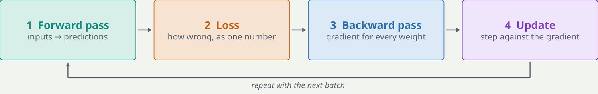
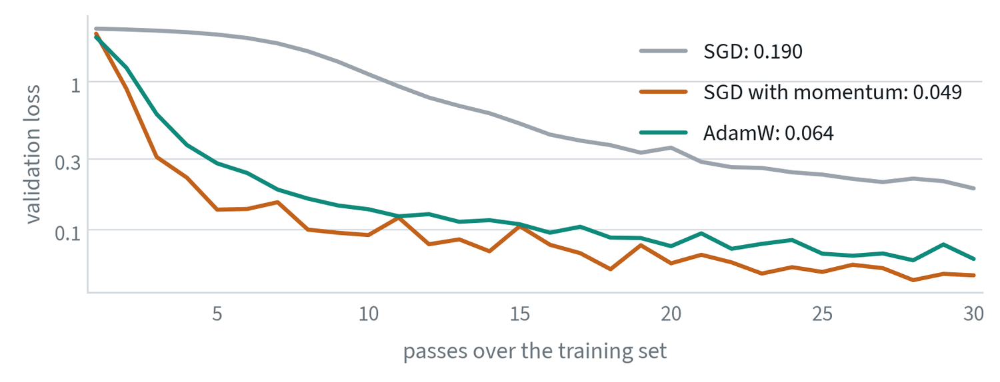
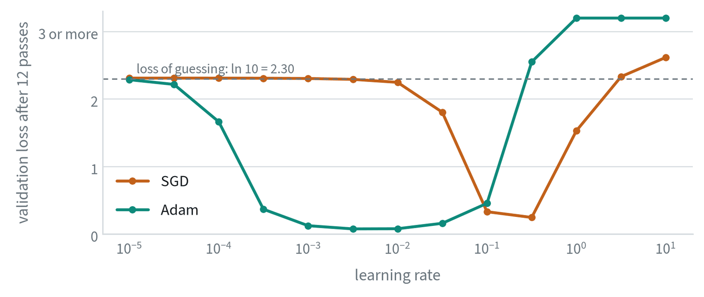
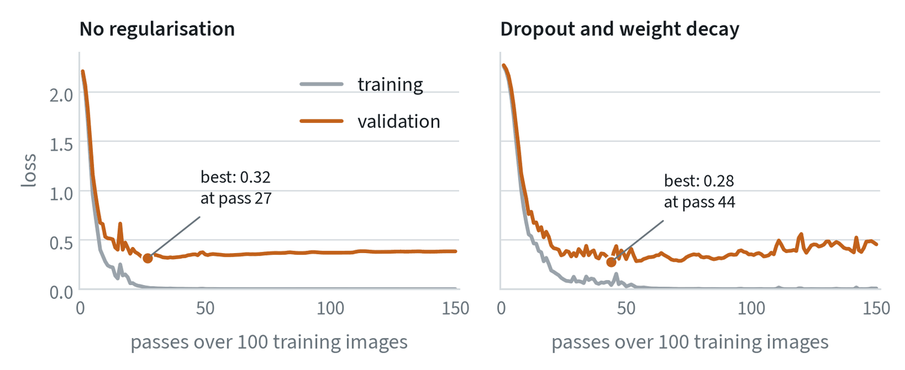
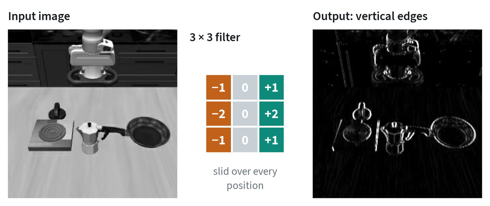

The training loop
Every model in this guide, from a small classifier to a robot foundation model, is trained the same way: four steps, repeated millions of times.


The forward pass turns a batch of inputs into predictions. The loss scores how wrong those predictions are, as a single number. The backward pass, called backpropagation, applies the chain rule layer by layer to find how much each weight contributed to the loss. That is the gradient. The update nudges every weight a small step against its gradient.
The optimizer decides the size of that step. AdamW is the default today. It keeps a running average of each weight’s gradient and of its size, which gives every weight its own step size, and it applies weight decay, a gentle pull toward zero, as a separate step.
The same loop in symbols
Write the model as a function with parameters , and the loss on a batch as the average loss over its examples. One step of training is:
The gradient is computed by backpropagation, which is the chain rule applied from the loss backwards. If layer computes , then the gradient with respect to its input follows from the gradient with respect to its output:
Two consequences are worth carrying around. The backward pass costs about the same as the forward pass, so a training step is roughly three times the cost of inference. And the gradient at an early layer is a product of one term per later layer, which is why depth is fragile: if those terms are mostly smaller than one the product vanishes, and if larger it explodes. A later section measures this.
The batch gradient is a noisy estimate of the gradient over the whole dataset, with noise that shrinks as . That noise is not purely a nuisance. It is part of why stochastic gradient descent finds solutions that generalise.
Optimisers
Plain gradient descent uses the same step size for every parameter and forgets the past. The optimisers in use add memory and per-parameter scaling.
Momentum keeps a running average of past gradients and steps along that, which damps oscillation and speeds progress along consistent directions:
Adam keeps a running average of the gradient and of its square, and divides one by the root of the other. Every parameter gets its own effective step size, large where gradients have been small and small where they have been large:
The hats denote a correction for the averages starting at zero: and likewise for . Typical values are and . AdamW adds weight decay as a separate step, , instead of folding it into the gradient where Adam’s scaling would distort it. It is the default for transformers.


The figure is a reminder that “which optimiser is best” has no general answer. Momentum edges out AdamW on this small problem. On large transformers AdamW is far more forgiving of the learning rate, and that robustness is why it is the default.
The learning rate
The learning rate is the size of each update, and it is the most important number to tune.


Two things in this sweep generalise. The usable range is roughly one to two orders of magnitude wide, so a sweep on a log scale finds it in a handful of runs. And the range depends on the optimiser: Adam’s basin here sits about a hundred times lower than plain gradient descent’s, which is why a rate copied from one setup rarely transfers to another.
In practice the rate is not constant. It ramps up linearly from zero over the first steps, because early gradients are large and noisy, and then decays, usually along a cosine:
One trap is worth knowing early. A metric that stops improving only because the schedule has reached zero has not converged. Check that the model levelled off while the learning rate was still meaningfully above zero.
Loss functions: telling the model what “wrong” means
The loss is the only signal the model gets, so choosing it is choosing what the model cares about. Pick the one that matches the kind of output.
| Loss | Use it when the output is | Intuition | Where you will see it |
|---|---|---|---|
| Cross entropy | One of several classes, or the next token | Penalises low probability on the correct answer | Classifiers, language models, action tokens |
| MSE | A continuous number | Penalises large errors heavily; predicts the average | Regression, diffusion and flow-matching targets |
| L1 or Huber | A continuous number with outliers | Penalises errors evenly | Action regression, depth, boxes |
| KL divergence | A probability distribution | How different two distributions are | VAEs, distillation from a teacher |
| Contrastive | An embedding | Pull matching pairs together, push the rest apart | CLIP-style models, retrieval |
The second row matters for robots. MSE predicts the mean, so a policy trained with it averages two valid ways of doing a task. The note on robot policies shows why that fails.
Why these losses: maximum likelihood
The losses in the table above are not arbitrary. Each one says: make the training data as probable as possible under the model. Cross entropy is exactly that for a choice among classes. Mean squared error is the same idea under the assumption that the right answer is one value blurred by bell-shaped noise.
That assumption is why squared error predicts the average. If the data contains two different right answers, a single bell curve fitted to both sits in the middle. Generative models exist to replace that assumption with something that can hold several answers at once.
Softmax and cross entropy, written out
A classifier outputs one score per class, called logits . The softmax turns them into probabilities, and cross entropy is the negative log of the probability given to the correct class :
Its gradient with respect to the logits is remarkably simple: , the predicted probabilities minus the truth. A language model applies exactly this at every position, with the vocabulary as the classes. Robot policies that write actions as tokens do the same.
Two refinements are common. Label smoothing trains toward a target of on the correct class instead of 1, which stops the logits growing without bound and improves calibration. For regression with outliers, the Huber loss is quadratic for small errors and linear for large ones, so a few bad labels do not dominate the gradient.
Overfitting and capacity


The goal is low error on data the model has never seen. Capacity is how complex a function the model can represent. A model with too little, or a broken training run, gives high loss on both training and validation data, which is underfitting. A model that memorises shows training loss still falling while validation loss rises, which is overfitting. In the left panel the best validation loss comes at pass 27; every pass after that makes the model worse while the training loss says it is getting better.
The classical account splits the expected error of a model into three parts:
Bias is error from a model too simple to fit the truth. Variance is how much the fitted model changes with the particular training sample. Small models are high in bias and large ones in variance, which predicts a sweet spot in between. The modern twist is that very large models trained on very large datasets often keep improving past the point where this picture says they should fail, an effect called double descent. The practical rule has not changed: hold out data, plot both curves, keep the checkpoint with the best validation score, and reach for more data before anything else.
Convolutions: the older building block that stayed
Before transformers, vision models were built from convolutions. A convolution slides a small grid of weights over the image and, at each position, outputs one number saying how well the patch underneath matches the grid.


Two properties made this work. The same weights are used at every position, so a feature learned in one corner is recognised in another. And each output looks only at a small neighbourhood, so early layers find edges and later layers combine them into parts and objects.
Transformers have replaced convolutions as the main architecture, and convolutions are still in most systems. The step that cuts an image into patch tokens is a convolution. The autoencoders that compress images and video are convolutional. Several robot policies still use a convolutional network for vision.
Why deep networks train at all

Stacking plain layers stops working quickly. At 32 layers the plain network does no better than guessing, and the right-hand panel shows why: the gradient that reaches the first layer is eleven orders of magnitude smaller than the gradient at the last, so the early layers never move. This is the product of per-layer terms from the backpropagation equation, measured.
Three ideas fix it, and every modern network uses all three.
- Initialisation. Draw the initial weights with a variance chosen so that signals keep roughly the same size from layer to layer. For a layer with inputs and a ReLU, that is .
- Normalisation. Rescale activations inside the network. Layer normalisation computes, for each token, , with and taken over that token’s features. RMSNorm drops the mean and divides by the root mean square alone, which is cheaper and works as well in transformers.
- Residual connections. Compute instead of . The derivative is then . The identity term gives the gradient a path that is not multiplied down at every layer, which is the flat line in the figure.
With these, the 64-layer network trains as well as the 2-layer one.
The stabilisers
Three small ideas make deep networks trainable and keep them from memorising.
- Regularisation. Weight decay pulls weights toward zero. Dropout randomly silences units during training. Augmentation, such as random crops and colour shifts, acts as free extra data and matters a great deal when robot data is scarce. Early stopping keeps the checkpoint with the best validation score.
- Normalisation. It keeps the numbers flowing through the network at a steady scale. Transformers use LayerNorm or RMSNorm; older convolutional networks use BatchNorm.
- Residual connections. Each layer adds a correction to its input, so the output is x + f(x). Gradients get a direct path back to the early layers, which is what allows networks hundreds of layers deep.
Common mistakes
- Tuning everything except the learning rate. If training diverges or stalls, look there first.
- Stopping at the step budget. A run is finished when the validation curve has flattened, not when the counter runs out.
- Reading the training loss alone. It always improves. Only the validation curve says whether the model is learning or memorising.
Terms
- Gradient
- How the loss changes as each weight changes.
- Batch
- The handful of samples used for one update.
- Epoch
- One full pass over the training data.
- Weight decay
- A small pull of every weight toward zero at each step.
- Convolution
- A small grid of weights applied at every position of an image.
- Logit
- A raw score output by a network before it is turned into a probability.
- Momentum
- A running average of past gradients used as the update direction.
- Vanishing gradient
- A gradient that shrinks toward zero as it is propagated back through many layers.
Further reading
- Loshchilov and Hutter, 2017. Decoupled Weight Decay Regularization (AdamW).
- He et al., 2015. Deep Residual Learning for Image Recognition.
- Nakkiran et al., 2019. Deep Double Descent.
- Kingma and Ba, 2014. Adam: A Method for Stochastic Optimization.
- He et al., 2015. Delving Deep into Rectifiers (initialisation).
- Ba et al., 2016. Layer Normalization.